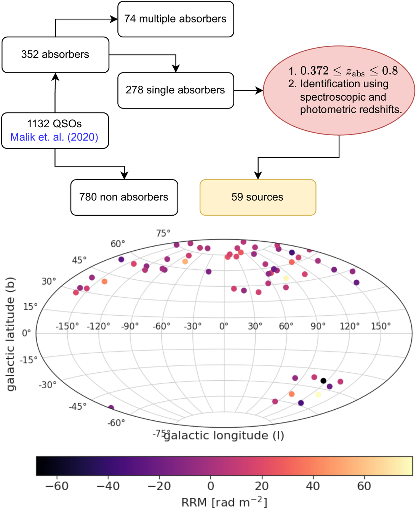
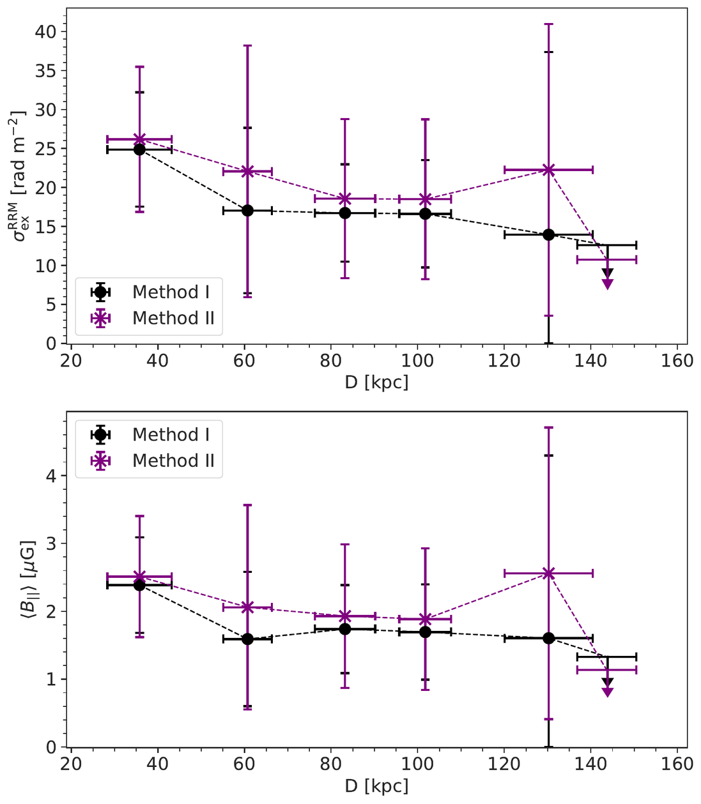

Magnetic fields around distant galaxies
A magnetic field rotates the polarization of radio light that passes through it. When a distant quasar shines through a foreground galaxy, that rotation carries the galaxy's magnetic field, even for galaxies far too distant to map directly. I worked on this as an undergraduate at IIT Delhi with Shivam Burman, supervised by Prof. Suprit Singh (IIT Delhi) and Dr. Sunil Malik (Universität Potsdam).
In short
Quasars as probes
The rotation of a quasar's polarization, its rotation measure, builds up along the whole sightline: in the quasar's own surroundings, in intervening galaxies and in the Milky Way. After the Milky Way's contribution is removed, what remains is the residual rotation measure. If a sightline passes through a foreground galaxy, the galaxy adds to its scatter.
Mg II absorption lines in a quasar's spectrum mark gas in a galaxy along the sightline. We matched rotation measures from the NVSS catalogue with quasars in SDSS and compiled 59 sightlines that each pass a single Mg II absorber at redshift 0.37–0.8, at impact parameters up to 160 kpc: from the galaxy's disk out into its circumgalactic medium.
Compared with sightlines that have no absorber, the extra scatter in residual rotation measure falls with impact parameter. Converted to an average line-of-sight field, it is 2.39 ± 0.7 μG within 50 kpc and 1.67 ± 0.38 μG beyond: the field weakens from the disk out into the halo. Radio polarization surveys such as LOFAR and the SKA will extend the method to many more sightlines.
From the paper

